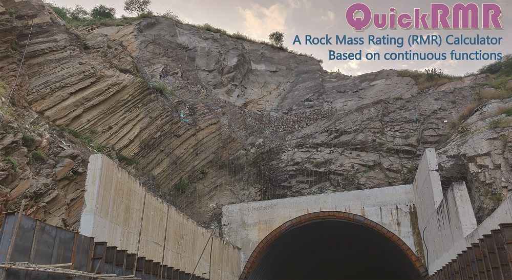
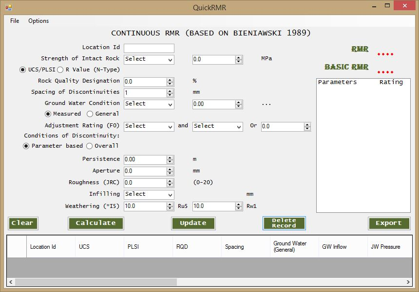

Continuous functions and a computer application for Rock Mass Rating
Jagadish Kundu, Kripamoy Sarkar, Ashok Kumar Singh, T.N. Singh, (2020) Continuous functions and a computer application for Rock Mass Rating, International Journal of Rock Mechanics and Mining Sciences, Volume 129Access the article here
Abstract: Rock Mass Rating (RMR) is a widely used rock mass classification system to assess the
quality/condition of rock masses for tunnels, mines, slopes and foundations. The RMR system has
been successfully practiced for more than four decades in the civil and rock engineering projects
worldwide. Even though RMR is responsive, economic and adaptive, it needs expert judgement for the
accurate rating due to subjectivity involved in each parameter. This paper proposes continuous functions
for the lump ratings of each parameter in the two frequently used versions of RMR, i.e. RMR89 and RMR14.
These continuous functions enable less experienced personnel to determine the RMR at high accuracy. Roughness
and weathering are two sub-parameters in the RMR system, which are defined descriptively lacking proper
quantification. We have adopted the Joint Roughness Coefficient and *I5 index (indices of surface weakening)
to quantify the roughness and weathering parameters respectively so that continuous functions could be proposed
for discrete ratings. To check the accuracy of the proposed continuous functions, we have analysed 71 case
studies for RMR89 and 22 case studies for RMR14 from different parts of the Indian Himalayan region.
Moreover, a windows application with a graphic user interface, named “QuickRMR”, has been developed to
calculate RMR89 and RMR14 using the proposed continuous functions. The software is freely available under
GNU GPL 3.0 open-source license. The QuickRMR has additional advantages as it indicates the limitations
and errors in the input values, calculates and stores RMR data for multiple locations and export the
results of all location in one excel file for report generation and further processing.
Keywords: Rock mass classification; RMR; Continuous functions; Computer application; QuickRMR
The QuickRMR Application
'QuickRMR' is a windows computer program and has been developed to calculate both RMR89 and RMR14 using the new continuous functions proposed by Kundu et al. (2020). This computer program aims at making the RMR determination automatic, easy and convenient. The program is freely available and is distributed under an open-source license. The user can calculate, store, update and delete RMR data for several locations and finally can export ratings of each parameter for all location to an MS Excel file. The application has been written in Visual C#.
Rock mass conditions at a twin tunnel portal with diverse lithological and structural characteristics. The portal slopes have been been stabilized with support systems. (Photo credit: Dr. Harsh K. Verma, Pr Scientist and HOS at CSIR-CIMFR Bilaspur)
User Interface of RMR89 in QuickRMR application